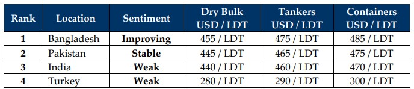

GMS Week 13 – CONFUSION!
in Weekly Demolition Reports 31/03/2025

As highlighted in last week’s edition of the GMS Weekly, the two VLCCs that have fallen afoul of USDN rules and become victims of OFAC sanctions remain stranded outside Bangladeshi waters with no prospects of a final resting place and this is now seeing cash buyers and ship recyclers being vigilant in their appropriate ‘due diligence’ prior to negotiating on units, especially those deemed suspect as there reportedly are still a few more units in cash buyer hands that are waiting to be introduced for a recycling resale. However, given the fate that the behemoth duo has run into outside Bangladesh, it remains to be seen how these pending and even future dealings with candidates from sanctioned source(s) will eventually transpire.
For now, like 2024, the 2025 tsunami of economic tumult continues to surprise week-after-week with macro fundamentals taking turns to shake up ever-changing sentiments across the board. Oil has started to jitter like the stock markets as despite registering declines through the week (and being low overall), it ended at a ‘higher than last week’ level of USD 69.40/barrel, as oil markets remain cautious on the back of recently announced Iranian and Venezuelan sanctions. On the flip side (and rather surprisingly), charter rates declined this week across the dry bulk board as nearly all sectors (Handies, Panamaxes, Capes, and even Supras) registered falls, dragging the overall Baltic Dry Sea Freight Index down this week, which was followed by a minor uptick in recycling enquiries from sellers at the bidding tables. And while some of the discussions are still ongoing, local anchorages delivered a Margarita Mix of surprises as Pakistan took in more vessels than India this week, despite a clear overall decline in the number of arrivals & deliveries across the sub-continent board.
Zooming into domestic fundamentals of ship recycling markets, steel plate prices played opposite roles in Pakistan and India as while Indian levels recorded an impressive jump, Pakistani levels continue to bleed out as they have declined non-stop over the last month now, all while Bangladeshi and Chinese levels continue to flatline at the bottom of the pool. Even the U.S. Dollar remained undecided against these currencies as it made firm improvements against some, while losing ground against others. Bangladesh seems surprisingly bullish despite ongoing Eid holidays and the end of the Holy Month of Ramadan, likely on the back of a few hungry recyclers, whilst competing India and Pakistan struggled to keep up even though there remains a distinct lack in the availability of units for a recycling sale as we end lucky number Week 13 and head into Q2 of the year. Prices in Bangladesh are slightly higher than USD 450/LT LDT on certain select / favored units (such as tankers and containers) coming in from the Far East and this has left India & Pakistan gravitating towards even smaller geographically positioned units to satisfy their own permeating demand.
Finally, with the HKC June 26th deadline approaching closer and even the deadline within which to begin yard upgrades in Bangladesh by March 31st has not been extended as yet, a healthy number of domestic recyclers will be unable to import vessels post-Eid. Pakistan, meanwhile, is at the very early stages of starting upgrades and needs to do much more work in the months ahead in order to stay relevant, whilst Turkey surfs away into the distance on the back of a receding Lira. Q2? Phew!

📄 Download PDF: Ship-recycling-market-insight-Week-13-03-28-2025-Confusion-1.pdfSource: GMS,Inc. https://www.gmsinc.net/gms_new/index.php/web
 Translate
Translate{kind=link}